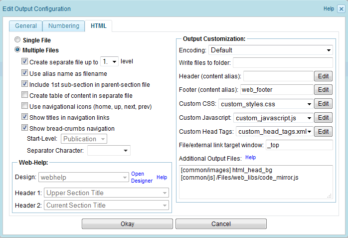
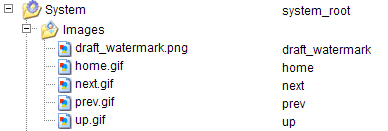
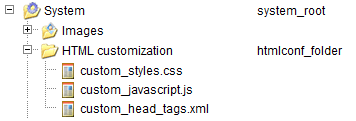

2.6.2.1.3. HTML output settings
The "HTML" tab of the output configuration dialog allows to edit the HTML output settings (see following screenshot). This tab is only available if the format "HTML" is selected in the "General" tab.

Figure 2.6.9. Output configuration: HTML settings
Each of the HTML output settings is described below:
Single File
If this configuration setting is checked, then the publication will be formatted as one single HTML file. Additionally, the referenced images will be stored in a folder named "images". Currently, this is only supported for static HTML export.
Multiple Files
If this configuration setting is checked, then the publication will be splitted into several HTML files. The splitting can further be controlled by the settings described below.
Create separate file up to X. level
This configuration setting controls which section levels get put into separate HTML files. For example, if you want the first and second section levels to be splitted into individual files, then enter the value "2".
Use alias name as filename
By default HTML filenames will be generated during the export process using internal counters. However, if a node has an alias name and this option is checked, then the alias name will be used as filename instead.
Include 1st sub-section in parent-section file
If this configuration setting is checked, then every first section will be included in the HTML file of the parent section.
Create table of contents in separate file
By default the table of contents is included in the publication's title page. If this configuration setting is checked, then a separate HTML file will be generated for the table of contents. The title page will then contain a link to this file.
Use navigational icons (home, up, next, prev)
If this option is checked, then graphical navigation links for the home, up, next and previous links will be generated. Otherwise the navigation links will be rendered as textual links. The images used for the graphical navigation links are identified by the alias names "home", "up", "next" and "prev". By default this images are located in the "images" folder within the "System" folder:

Figure 2.6.10. Default location of HTML navigation images
Show titles in navigation links
If this option is checked, then the navigation links will show the title of the referenced chapter.
Show bread-crumbs navigation
If this option is checked, then a bread-crumbs navigation is inserted in each HTML page. The field "Start-Level" defines the root-node of the bread-crumbs navigation. If no separator character is specified, then the "<" character is used as default-separator. Special separator characters can be entered as entity-notation (e.g. enter → to insert a right-arrow as separator).
Encoding
Select the output encoding to be used for the exported HTML files. If no output encoding is selected, the default encoding will be used (depending on the output format).
Write files to folder
Optionally enter a sub-folder path. This option can be used to export generated files into a sub-folder.
For example, to place all files in a sub-folder named docu, enter "docu/". Given this example, the index-file of the publication is then exported to docu/index.html. Note that if a sub-folder is configured, then an additional index.html file is exported into the root-folder, which redirects to the index-file in the sub-folder (in the given example: docu/index.html).
Note that this option is not supported for EPUB output.
Header (content alias)
Enter here the alias name of a content node that shall be included at the top of each generated HTML file. Click the "Edit" button next to the input field to edit the content node.
Footer (content alias)
Enter here the alias name of a content node that shall be included at the bottom of each generated HTML file. Click the "Edit" button next to the input field to edit the content node.
Custom CSS / JavaScript / Head Tags
Select the custom CSS/JavaScript/Head-Tags file that shall be included in the exported HTML. The files are located in the "HTML customization" folder within the "System" folder:

Figure 2.6.11. Location of custom CSS/JavaScript/Head-Tags files
Additional customization files can be added to this folder (e.g. if different CSS/JavaScript/Meta-Tags customizations are required for different publications). Click the "Edit" button next to the field to edit the file content.
Note: The Head-Tags file allows you to define additional HTML meta tags to be inserted in the head part of each exported HTML file. For example, insert following meta tag to set the expiration date of the HTML files to 12 hours (43200 seconds):
<meta http-equiv="expires" content="43200" />
File/external link target window
The name of the target window for external links and file links (see Section 2.3.8.8, “Links”). Besides entering a user-defined name, following pre-defined names can be used: To open links in the same frame as where the link is contained, enter "_self". To open links in the parent frame, enter "_parent". To open links in the top-most frame of the same window, enter "_top". To open links in a new window, enter "_blank".
Web-Help Design
This field is enabled for Web-Help output only. Select the folder or zip-file that contains the Web-Help design-configuration.
The available designs are located in the product-tree folder  System >
System >  HTML customization. The sub-folder webhelp contains the Web-Help default design. Further designs can be uploaded to the HTML customization folder. For more information, see Section 1.13.12, “Customizing the Web-Help design”.
HTML customization. The sub-folder webhelp contains the Web-Help default design. Further designs can be uploaded to the HTML customization folder. For more information, see Section 1.13.12, “Customizing the Web-Help design”.
Web-Help Header1 / Header2
Web-Help layouts can define a header-box that display up to two headlines. The Header1/Header2 settings define the content of the first and second headline.
By default, the first headline shows the title of the upper section and the second headline shows the title of the displayed section.
Additional Output Files
This text-field allows the definition of files to be added to the HTML output folder. Each line in the text-field defines the export of one file. The output path needs to be given in square brackets. After the square brackets, the alias name of the file to be exported or the path to the file within the product tree has to be given. For example, the following configuration exports the image with alias name "html_head_bg" into the output folder common/images of the exported publication. Additionally the zip-file data.zip, located in the folder Files > packages of the product-tree, is placed in the root folder of the exported publication.
[common/images] html_head_bg
[] /Files/packages/data.zip
[] /Files/packages/data.zip
Instead of just adding a zip-file to the output folder, a zip-file can also be extracted into the output-folder by appending a slash (/) after the filename. For example, to extract the zip-file given in the example above into the root folder of the exported publication, the line has to be changed as follows:
[] /Files/packages/data.zip/
Be aware, that if filename conflicts occur, files added to the output folder will overwrite files generated by Docmenta.
Note that in path expressions, the slash character (/) has to be used as filename-separator (even in case MS-Windows is used as operating system). If a filename within the path expression contains a slash character, then the slash needs to be escaped by a backslash character (\) to prevent it to be interpreted as filename-separator.